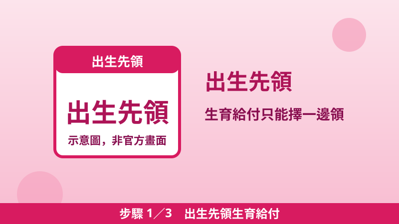
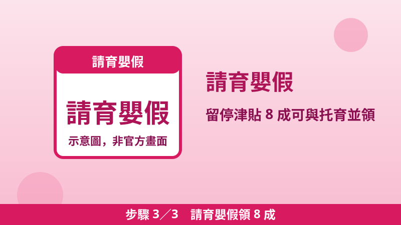

育兒三筆錢能不能同時領？生育給付、育兒津貼、托育補助、育嬰留停對照表
生一個小孩，政府其實有好幾筆錢可以領——但每一筆的「領取條件」不一樣，有的只能擇一、有的二選一、有的可以並領。最常見的損失不是資格不符，而是以為不能領就沒去申請，或同時申請了互斥的兩筆被退件。這篇把四筆錢的關係一次對照清楚，金額數字全部查證自勞保局與行政院公報官方頁面。
② 育兒津貼與托育補助二選一
③ 育嬰留停津貼 8 成，可以與托育補助同時領
四筆錢對照表
| 項目 | 誰領、領多少 | 能不能跟別人並領 |
|---|---|---|
| 生育給付／生育補助 | 生產當下那一筆：勞保按前 6 個月平均月投保薪資一次給 60 日；國保 2026/1/1 起補足至每胎 100,000 元；沒參加任何社會保險者 2026/1/1 起每胎 100,000 元 | 只能擇一（農保除外）；多胞胎按比例增給 |
| 育兒津貼 | 自己或家人照顧未滿 5 歲幼兒：每月 5,000–7,000 元（依胎次） | 不能與托育補助同時領；滿 2 歲自動銜接免重辦 |
| 托育補助 | 未滿 2 歲送托公共化每月 7,000 元起、準公共 13,000 元起；中低收入戶、低收入戶與弱勢家庭再加碼 | 不能與育兒津貼同時領；可以與育嬰留停津貼同時領 |
| 育嬰留職停薪津貼 | 請育嬰假期間：前 6 個月平均月投保薪資 60%＋政府補助 20%＝每月 8 成，每名子女每位家長最長 6 個月，父母可同時請領 | 可以與托育補助同時領；不同時間點的生育給付不衝突 |
規則一：生育給付只能擇一，選金額高的那邊
勞保生育給付的資格是參加勞保滿 280 日後分娩、或滿 181 日後早產，按前 6 個月平均月投保薪資一次給與 60 日；國保生育給付是一次發給 2 個月月投保金額，2026 年 1 月 1 日以後分娩或早產者，政府以預算補足至每胎 100,000 元；完全沒參加勞保、農保、公保、軍保與國民年金的媽媽，2026 年 1 月 1 日以後分娩或早產、新生兒在國內辦出生登記，也可以領每胎 100,000 元生育補助。
重點是：同時符合兩種以上社會保險生育給付資格時，只能擇一請領（農保不在此限）。實務做法是先試算各邊金額——例如勞保按投保薪資算出的 2 個月，對照國保的 10 萬元——選高的那邊申請，申請前也可先打電話向勞保局確認。請求權時效是 5 年，但愈早辦愈不會忘。
規則二：育兒津貼與托育補助，只能二選一
這是最容易搞混的一組。育兒津貼是給「自己或家人照顧」的家庭；托育補助是給「把未滿 2 歲孩子送到公共化或準公共托嬰中心、居家托育」的家庭。同一名孩子、同一段時間，只能領其中一種。
托育補助的金額以行政院公報附表為準：公共化每月 7,000、8,000、9,000 元（依胎次），準公共每月 13,000、14,000、15,000 元；中低收入戶各加 2,000 元、低收入戶與弱勢家庭各加 4,000 元；實際支付低於標準者核實支付。送托日起 15 日內要申請，才能追溯自送托日發給，逾期就從申請日算起——這 15 天是托育補助最關鍵的期限。
孩子滿 2 歲之後，托育補助改按「扣除教育部育兒津貼差額」的方式支付，不用因為滿 2 歲就以為補助直接斷掉；自己帶的家庭則是育兒津貼一路領到 5 歲，滿 2 歲自動銜接免重辦。
規則三：育嬰留停 8 成，可以與托育補助同時領
育嬰留職停薪津貼是就業保險給付：津貼本身為前 6 個月平均月投保薪資 60%，政府再補助 20%，合計每月 8 成；每名子女每位家長最長 6 個月，自 111 年 1 月 18 日起父母可以同時請領。衛福部少子女化對策 Q&A 明載：自 110 年 8 月起，托育補助可以與育嬰留職停薪津貼同時領取。
換句話說，夫妻同時請育嬰假、孩子同時送托的家庭，留停津貼照領、托育補助也照領，兩邊不互斥。唯一要注意的是送托的每週時數與申請文件：托育補助要求每週送托 30 小時以上，向送托地點（托嬰中心或居家托育服務中心）提出申請，文件備齊日起 5 日內初審。
照這個順序申請，三步驟不漏領

步驟 1出生先領生育給付
辦出生登記時併同申請最省事。先試算勞保、國保各邊金額，選高的那邊擇一申請；沒保險的媽媽記得自己申請新增的 10 萬元補助，不會自動發放。
步驟 2決定自己帶或送托
自己帶就申請育兒津貼；送托就申請托育補助，送托日起 15 日內一定要送出申請。兩種不能同時領，選定一種就好。

步驟 3請育嬰假領 8 成
父母可同時請領，每人最長 6 個月。請假期間孩子送托，托育補助仍可同時領，兩筆一起算才是完整的育兒收入。
常見問題
雙胞胎怎麼算？
生育給付與生育補助都是多胞胎按比例增給（例如國保與未投保補助：雙胞胎 20 萬元、三胞胎 30 萬元）；育兒津貼與托育補助則按胎次與人數分別計算，申請時以每名孩子為單位填寫。
換工作、換托嬰中心要重辦嗎？
托育補助向送托地點申請，換送托地點要重新確認申請；育嬰留停津貼以就業保險年資與請假事實為準，換工作期間請先向勞保局確認年資是否連續。任何變動都先問承辦單位，不要等到停發才補件。
育兒津貼申請表上還寫了什麼互斥條件？
高雄市政府的育兒津貼申請表注意事項明載：發放對象為未滿 2 歲、已辦出生登記、未接受公共化或準公共托育服務且未經政府公費安置的兒童——接受托育服務就不能同時領育兒津貼，這正是規則二的官方依據。其他補助（如租金補貼）另有各自的家庭所得門檻，不要混為一談。
📖 延伸閱讀：2026 生育給付大升級：國保、沒保險的媽媽每胎 10 萬元 ／ 育兒津貼申請教學：0–5 歲每月 5,000–7,000 元 ／ 托育補助申請教學：未滿 2 歲送托每月最高 13,000–19,000 元 ／ 育嬰留職停薪津貼 2026：請育嬰假每月領投保薪資 8 成
📎 資料來源
- 勞動部勞工保險局「勞保生育給付」（280 日／181 日、60 日給與、5 年時效、擇一原則）：bli.gov.tw
- 勞動部勞工保險局「國民年金生育給付」FAQ（一次發給 2 個月、2026/1/1 起補足至每胎 100,000 元）：bli.gov.tw
- 勞動部勞工保險局「未參加相關社會保險者生育補助」（2026/1/1 起每胎 100,000 元、擇一規定）：bli.gov.tw
- 勞動部勞工保險局「安心育兒：育嬰留職停薪津貼父母皆可申請」（60%＋20%＝80%、父母可同時請領）：bli.gov.tw
- 行政院公報：托育費用補助金額表（公共化 7,000／8,000／9,000 元、準公共 13,000／14,000／15,000 元、加碼與核實支付、滿 2 歲差額支付）：gazette.nat.gov.tw
- 行政院「0–6 歲國家一起養 2.0」說明（2024 年 1 月起未滿 2 歲公共化 7,000 元、準公共 13,000 元）：ey.gov.tw
- 衛生福利部「育有未滿二歲兒童育兒津貼」申請表（第 1 名 5,000／第 2 名 6,000／第 3 名以上 7,000 元；發放對象須未接受公共化或準公共托育服務）：orgws.kcg.gov.tw
最後查證日期：2026-10-28
免責聲明：本文僅供參考，補助資格與金額以政府官方最新公告及承辦單位認定為準。